Home / Past papers / MLF End Term / this paper
IIT M FOUNDATION DIPLOMA ENDTERM QPB1 07 Aug 2022 - 07 Aug 2022
Elapsed 00:00

- Yes
- No
Suppose that eigenvalues of matrix A are 1, 0.5, 0.25. The determinant of (A−1)T is NOTE: Enter your answer to the nearest integer.
NOTE: Enter your answer to the nearest integer.
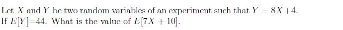
Comprehension passage - the questions below it refer to this
Based on the above data, answer the given subquestions.
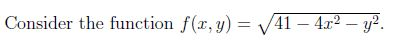
Compute the equation of the function’s linear approximation at point (2,3). If the equation of the linear approximation is L = ax + by + c, then provide the value of a. NOTE: Enter your answer to the nearest integer.
Compute the equation of the function’s linear approximation at point (2,3). If the equation of the linear approximation is L = ax + by + c, then provide the value of b. NOTE: Enter your answer upto two decimal.
Compute the equation of the function’s linear approximation at point (2,3). If the equation of the linear approximation is L = ax + by + c, then provide the value of c. NOTE: Enter your answer upto two decimal.
Comprehension passage - the questions below it refer to this
Based on the above data, answer the given subquestions.
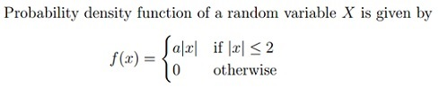
Calculate the value of a NOTE: Enter your answer upto two decimal.
NOTE: Enter your answer upto two decimal.
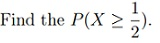
If two complex vectors v1 and v2 have lengths l1 and l2 and v1.v2 = l1l2, then which of the following statements is/are true?
- v1 and v2 vectors are parallel to each other.
- v1 and v2 vectors are conjugate to each other.
- v1 and v2 vectors are perpendicular to each other.
- v1 and v2 can be any two vectors.
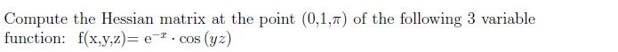
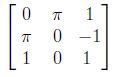
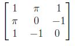
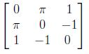
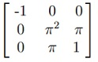
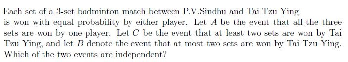
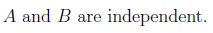
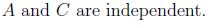
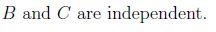
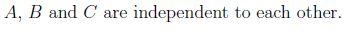

- positive definite
- positive semi-definite
- negative definite
- negative semi-definite
- None of these
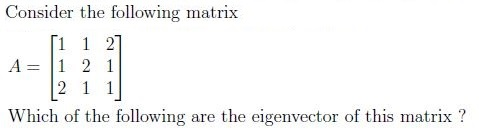
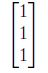
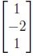
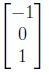
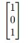
Comprehension passage - the questions below it refer to this
A manufacturing company makes two types of television sets; one is smart led and the other is normal led. The company has resources to make at most 300 sets a week. It takes Rs 1800 to make a smart led set and Rs 2700 to make a normal led set. The company can spend not more than Rs 648000 a week to make television sets. If it makes a profit of Rs 510 per smart led and Rs 675 per normal led. Based on the above data, answer the given subquestions.The objective function to maximise the profit for the given problem is
- 510x + 675y
- 410x + 675y
- 510x + 575y
- 102x + 135y
The constraints for the given problem is
- x + y ≤ 300
- 2x + 3y ≤ 720
- x + 3y ≤ 120
- x ≥ 0, y ≥ 0
NOTE: Enter your answer to the nearest integer.
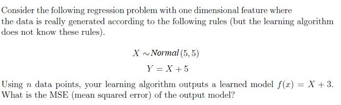
NOTE: Enter your answer in one decimal place.
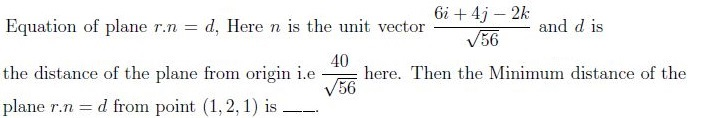
NOTE: Enter your answer to the nearest integer.
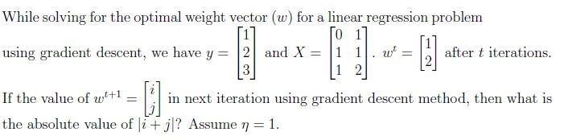
NOTE: Enter your answer upto one decimal.
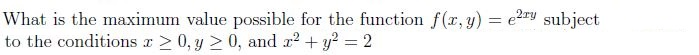
NOTE: Enter your answer upto two decimal
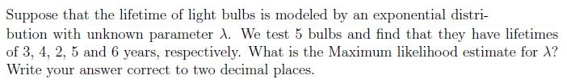
Comprehension passage - the questions below it refer to this
Based on the above data, answer the given subquestions.
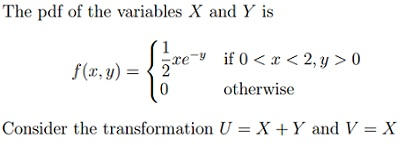
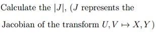
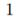
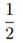
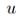
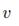
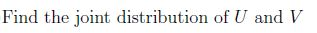
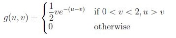
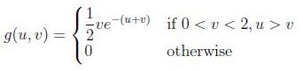
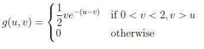
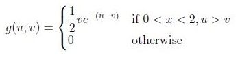
Answer key
- Q1 (MCQ, 0 marks): A
- Q2 (SA, 2 marks): 8
- Q3 (SA, 2 marks): 45
- Q4 (SA, 1 marks): -2
- Q5 (SA, 1 marks): -0.8 to -0.7
- Q6 (SA, 1 marks): 10.0 to 10.5
- Q7 (SA, 1 marks): 0.23 to 0.27
- Q8 (SA, 2 marks): 0.42 to 0.48
- Q9 (MCQ, 3 marks): A
- Q10 (MCQ, 3 marks): D
- Q11 (MCQ, 3 marks): B
- Q12 (MCQ, 2 marks): A
- Q13 (MSQ, 3 marks): A, B, C
- Q14 (MCQ, 2 marks): A
- Q15 (MSQ, 3 marks): A, B, D
- Q16 (SA, 3 marks): 4
- Q17 (SA, 3 marks): 3.5 to 4.0
- Q18 (SA, 3 marks): 5 to 7
- Q19 (SA, 3 marks): 7.1 to 7.7
- Q20 (SA, 3 marks): 0.23 to 0.27
- Q21 (MCQ, 3 marks): A
- Q22 (MCQ, 3 marks): A